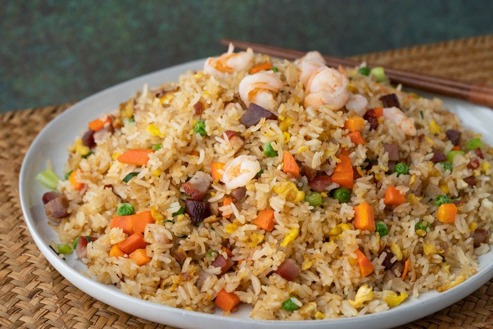

Fried Rice

Description
Ingredients
- 1 (10 ounce) package frozen mixed vegetables
- 2 eggs
- 4 cups cooked white rice
- 6 slices bacon
- ½ cup snow peas
- 2 carrots, diced
- 2 tablespoons soy sauce
- ½ teaspoon salt
Steps
- Prepare frozen vegetables according to package instructions and set aside.
- Scramble the eggs in a medium skillet and chop into small bits; set aside.
- Place bacon in a large, deep skillet. Cook over medium high heat until evenly brown. Drain, crumble and set aside, reserving skillet with bacon grease.
- Place the rice in the skillet of bacon grease and saute for 2 to 3 minutes, until coated. Mix in soy sauce, mixed vegetables, carrots and peas. Cook for 20 minutes before stirring the bacon and eggs into the rice; cook for another 10 minutes, stirring, and serve.